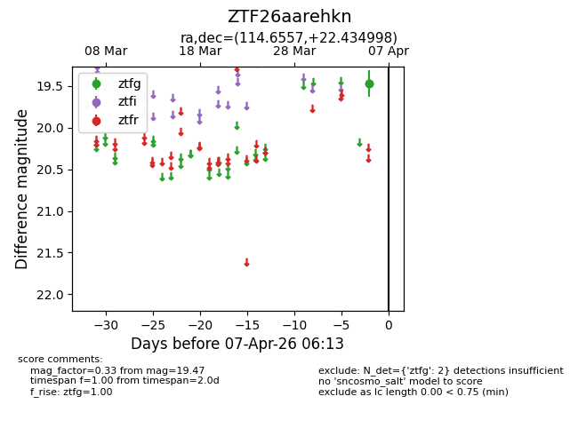
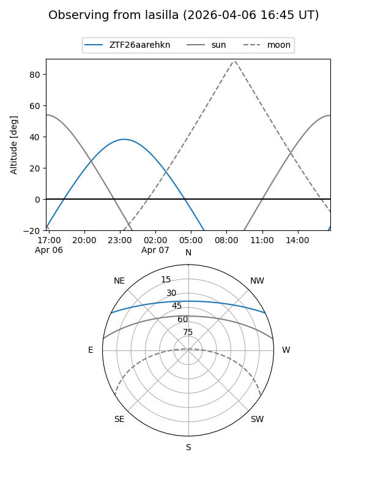
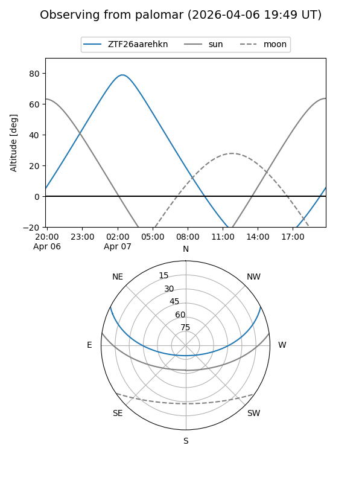

ZTF26aarehkn
Target ZTF26aarehkn at 2026-04-07 06:17
Aliases and brokers:
FINK: link
Lasair: link
ALeRCE: link
alt names
ZTF26aarehkn (ztf,fink_ztf)
Coordinates:
equatorial (ra, dec) = 114.6557,+22.43500
equatorial (HMS+DMS) = 07:38:37.36,+22:26:05.99
galactic (l, b) = (197.2811,+20.01034)
Flags:
Photometry:
last ztfg=19.47
2 ztfg detections
Lightcurve

Visibility


Additional plots